McRoberts MoveMonitor
- Data transfer protocol for patients
- Data transfer protocol for professionals
- As a professional: do I need to do anything on a daily basis or all N days (for each patient using a specific device / app)?
- As a professional: do I need to do anything after each individual period of device / app use ended (for each patient using a specific device / app)?
- As a professional: do I need to do anything after the full periods of use of a specific device / app ends (for each patient using a specific device / app)?
- Original device setup and pairing
- Device pre-setup and configuration
- What sort of a device / application is this, what is it for and how does it work?
- What has already been done in pre-setup for the device or application?
- What will need to be done before a patient can start using this?
- Any account setup required?
- Needs pairing with hub-device?
- Any configuration / assembly required?
- Add Project and subject characteristics
- Add or select a project, subject and visit in order to start a measurement.
- Using different projects is useful for organizing your data. Subject characteristics such as gender, year of birth, height and weight are added for each new subject.Visits refer to different measuring moments.
- Device How To / setup for wear
- Troubleshooting/FAQ
- Device return
- Returned device processing and cleaning / an application use period for a participant has ended
- Device recycling and provisioning
General Device Introduction
MoveMonitor records your movement as you go about your daily life, such as walking and sleeping. The movement data collected can be used to calculate a range of assessments, such as energy expenditure. MoveMonitor can record data for up to 7 days without needing to be charged.
How does this device look?
The device is a flat white sensor (Figure 1), it is easy to clean and wear at the lower back using the elastic strap provided (Figure 2).My McRobertsis a website (Figure 3) for configuring the MoveMonitor sensor prior to use in research.
| 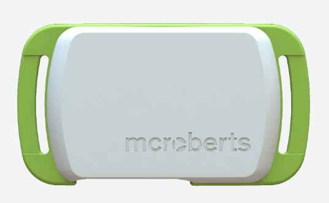 | 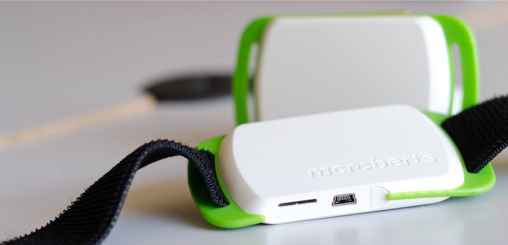 |  |
| Figure 1:MoveMonitor Sensor. | Figure 2: MoveMonitor with strap. | Figure 3: My McRoberts software. |
What does it record?
MoveMonitor automatically records anonymised movement data, such as_position_of body and the_speed_and_direction_that you move. My McRoberts then uses this data to create reports such as energy expenditure or movement during sleep.
How is it used?
MoveMonitor is worn on the lower back (waist) using the elastic strap provided for 24/7 monitoring and up to 7 days of continuous measurements. The device isnot waterproofand can be either worn on the skin or over clothing (preferably the first layer).
 |
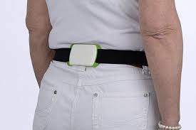 |
| Figure 4: MoveMonitor being worn around the waist. |
Data transfer protocol for patients
As a patient: do I need to do anything on a daily basis or all N days?
N DAYS= 5 days, up to 7 days of continuous measurement.
Make sure you wear the device in the position indicated by your clinician for the advised time frame. Your study period may last up to ($TIME_PERIOD – N DAYS) days. You will wear the sensor 24/7 - also during sleeping. Make sure you wear the MoveMonitor correctly. The device should be worn around the waist, at the middle of the lower back. The engraved McRoberts logo should be readable, and the waist belt should be on the inside. It can be worn directly on the skin or over a thin layer of clothes. Please note that the MoveMonitor is not waterproof, so it is not suitable for showering, bathing or swimming.
| 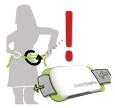 |
| Figure 5:How to correctly wear MoveMonitor. |
As a patient: do I need to do anything after each individual period of device / app use ended?
No. After ($TIME_PERIOD – N DAYS) days you will be contacted by a clinician and will either (i) be provided with a new device; (ii) meet a clinician to return the device and retrieve your data; or (iii) receive another device to wear.
As a patient: do I need to do anything after my full periods of use of a specific device / app ends?
Yes. You will be contacted by a clinician to see how your full period of use has been. They will complete an evaluation questionnaire with you over the phone (or by visiting you at your home). You can give the researcher your device in person or by posting it back to the centre in order to retrieve your data.
Data transfer protocol for professionals
As a professional: do I need to do anything on a daily basis or all N days (for each patient using a specific device / app)?
No. You don’t need to transfer any data or visit the patient daily.
As a professional: do I need to do anything after each individual period of device / app use ended (for each patient using a specific device / app)?
Yes. After ($TIME_PERIOD – N DAYS) of use you must arrange a meeting with the patient to (i) obtain the MoveMonitor device; (ii) retrieve data from it; (iii) recharge it; (iv) set up a new measurement for ($TIME_PERIOD – N DAYS) and (v) give the patient the new device. Data transfer will start automatically once you log in on “My McRoberts” and connect the device via a USB cable to your PC that has the DynaPort manager installed. Once data is transferred from the MoveMonitor you will be able to view them as reports on My McRoberts. Further instructions are outlined in Section 3.
As a professional: do I need to do anything after the full periods of use of a specific device / app ends (for each patient using a specific device / app)?
Yes. After the full study period ends and the participant returns the MoveMonitor you must manually transfer data from it to the IDEA-FAST online data store:https://data.ideafast.eu. Instructions on how to transfer data are outlined in Section 3.
Collect and Upload data
Data is stored on the MoveMonitor device and must be transferred from it using the My McRoberts website withDynaPort ManagerSoftware installed. In order to install the DynaPort Manager, you need to have a computer running in Windows – see Section 3 for further instructions.
In order to retrieve data from the MoveMonitor sensor, follow the next steps:
| 1. Connect MoveMonitor to the computer using the provided USB cable. | 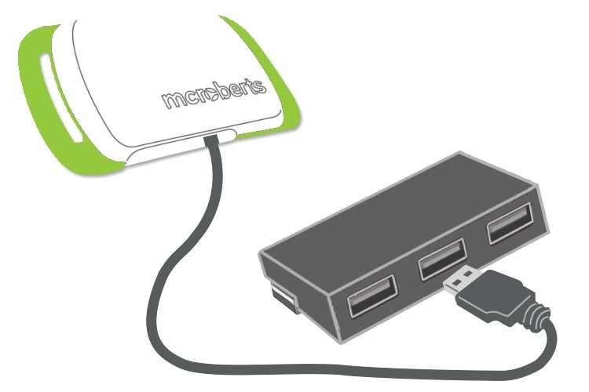 |
| 2. Log in to your McRoberts account at:https://www.mcroberts.nl/mymcroberts/login.html . If you don’t have an account, see how to create an account at the Section 3. | 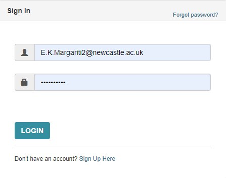 |
| 3. Open My McRoberts: If you have your MoveMonitor connected, you will be able to view it in the ‘Devices’ tab as shown. The data will be automatically downloaded from your device to your hard disk. |  |
| 4. Next, data will start uploading automatically to the McRoberts cloud servers for analysis. A green information tile will appear that shows the processing status. This process might take some time. | 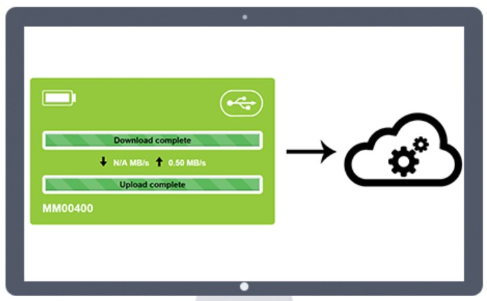 |
| 5. You can have an overview of data transfer and measurement status on ‘overview’ tab on the left-hand side of the screen. This overview is shown by default when you click on the tab ‘Data’. Click on a_status_ to view the individual measurements belonging to that status. | 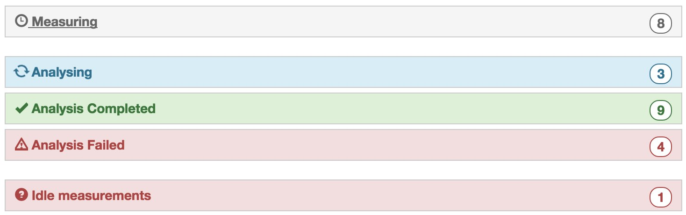 |
| 6. Measurements can also be viewed per project. All your projects are displayed below the ‘overview’ button on the left-hand side of the screen. Click on a project to view the subjects, visits and shared users of that project. Via subjects you can navigate to the measurement(s) belonging to that subject. | 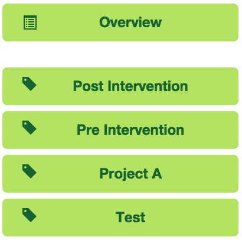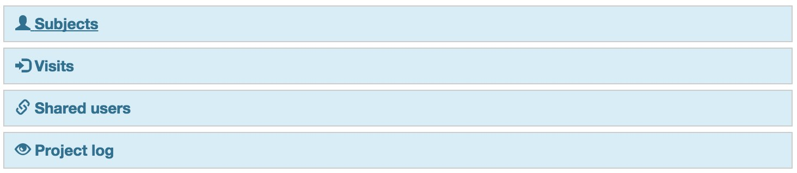 |
| 7. A project can be shared with colleagues. To do this, click on the button ‘shared users’, fill in an email address and assign ‘permissions’ to him or her for this project. Make sure that the colleague that you add already has a My McRoberts account. |  |
Access Raw data and create back-up files
Raw data are stored automatically when the MoveMonitor is connected to your computer and while you are logged into My McRoberts. Raw data will be located at the default location:
C:\Program Data\McRoberts\DynaPortManager\store
The McRoberts platform provides reports with the movement analysis and energy expenditure based on collected data.
Uploading Data to the IDEAFAST Hub
Once the data is on your laptop, you must manually upload this to the IDEA-FAST project at:https://data.ideafast.eu . To do this,
- Navigate toC:\Program Data\McRoberts\DynaPortManager\storeand select the measurement files (.OMX-files), which contain the raw movement data.
- Use the file selector pop-up presented by your browser to select the file (or use drag-and-drop to start the upload to the datahub. Some web-browsers will support this option).
Please also use the to store a backup copy of the raw data files (.OMX-files) on the IDEA-FAST backup hard-disk drive. Please copy and paste them from the locationC:\Program Data\McRoberts\DynaPortManager\storeto the IDEA-FAST backup location. Please make sure that BOTH the file upload AND the local data backup have been successfully completed.
Backing up Data Locally
Preparing Device Phone for next Study Participant
Data is automatically removed from the device when a new measurement with that device is set-up. If needed, the measurement file can be removed manually by accessing the device via Windows explorer. The visible .omx file is the file that contains the measurement data.
Original device setup and pairing
If handling a device and it arrives new: what needs doing before it gets sent to a study centre?
Put into inventory management?
Record the unique device ID that is printed in the inventory management tool athttps://inventory.ideafast.eu. Also use the to generate a project-specific device ID for each device. Record both IDs in the appropriate fields in and also record the current location of the device. Update to “EN-ROUTE-TO-” once dispatched.
Use the to produce a label and a backup label for the device and attach one label to the device immediately. Enclose the backup label with the device when preparing for dispatching it.
Label the device, then update device once dispatched. Make sure the device is charged: connect the dock to a power supply; position all sensor dots on the dock.
Needs firmware update?
Not applicable.
Pairing with a companion application?
Yes. You need to have a computer running in Windows and install the DynaPort software. See Section 3 for instructions.
Any account setup required?
Yes. An admin account onhttps://www.mcroberts.nl/mymcroberts/login.html is required to upload and view the data retrieved by MoveMonitor. This step is done when installing DynaPort initially and is required only for professionals. Patients do not need to have their own accounts. See further instructions in Section 3.
Needs pairing with hub device?
No. The MoveMonitor is connected via a USB cable with a computer running on Windows with DynaPort Manager Software installed. The device will then be automatically detected by the DynaPort Manager software. See further instructions in Section 3.
Any assembly required?
Yes. McRoberts sensor comes with an elastic strap and is worn around the waist (lower back). Please ensure that the bands are strapped onto the sensor as illustrated to the right.
Package together with which other devices for which study centre?
Yes.
If handling an application: what needs doing before a study centre can use the app?
Do we need to get accounts from the application provider?
Yes. You need to create an account onhttps://www.mcroberts.nl/mymcroberts/login.html by clicking ‘Sign Up Here’. When a ‘study code’ is requested during the sign-up process you can use‘IDEA-FAST’. Once you signed up you will receive an email. Click on the activation link in the email to activate your account. See further instructions at Section 3.
Can the software be downloaded or do we need to make it available?
Yes, the DynaPort software is downloaded after an account is created athttps://www.mcroberts.nl/mymcroberts/login.html . See further instructions at Section 3.
Does it need to be installed on the hub devices?
Not applicable
Do we need to activate study accounts?
Not applicable
Device pre-setup and configuration
What sort of a device / application is this, what is it for and how does it work?
MoveMonitor by McRoberts is an inertial sensing unit designed for activity and sleep tracking, that is worn in the_lower back._It can be worn under or over clothing (Figure 1). MoveMonitor is not waterproof, so it is not suitable for showering, bathing or swimming.
| Fig 6:How to correctly place MoveMonitor. The device should be worn around the waist, at the middle of the lower back. The engraved McRoberts logo should be readable, and the waist belt should be on the inside. |
The MoveMonitor sensor (Figure 7) automatically records anonymised movement data for up to 7-days and stores it in memory on the device. The sensor data recorded includes a 3D accelerometer, 3D gyroscope, magnetometer, barometer, and temperature sensor.
 |
| Fig 7:MoveMonitor sensor. |
Due to the quantity of data recorded through MoveMonitor, it must bemanually transferred from the device to a computer. MoveMonitor has an associated website where data can be uploaded, viewed, and automatically analysed to create reports on body posture, locomotion or sleep movements. This can be viewed at:https://www.mcroberts.nl/mymcroberts
The reports provide insights in energy expenditure (EE), including basal metabolic rate (BMR), diet induced thermo genesis (DIT), and physical activity (PA). The rates of EE during physical activity vary depending on intensity, duration, the frequency of the activity and on the body mass and fitness of the person performing the activity.
What has already been done in pre-setup for the device or application?
Not applicable
What will need to be done before a patient can start using this?
Any account setup required?
Professionals need to have an account in order to log in to My McRoberts, download DynaPort Manager Software, set up measurements and access patients’ data. Step 1-3 need to be performed for each individual admin user. One account is required for the clinician to retrieve the data and set up measurements.No need to have different accounts for each patient.
To create an account
| 1. Create an account onhttps://www.mcroberts.nl/mymcroberts/login.html by clicking ‘Sign Up Here’. When a ‘study code’ is requested enter‘IDEA-FAST’. | 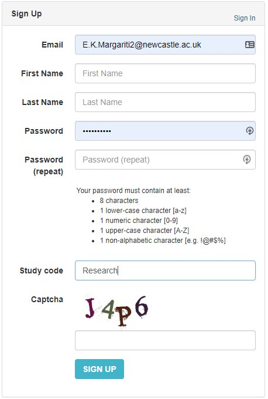 |
| 2. Once you signed up you will receive an email. Click on the activation link in the email to activate your account. You can now log in on My McRoberts. |
Needs pairing with hub-device?
MoveMonitor connects via USB with a computer running on Windows andDynaPort Manager installed. No pairing with hub is required.
Any configuration / assembly required?
No
Install DynaPort Software
In order to create an account and installDynaPort Software, you need to have a computer operating in Windows. Please follow the following steps to create an account and install DynaPort Software:
| 1. Create an account onhttps://www.mcroberts.nl/mymcroberts/login.html by clicking ‘Sign Up Here’. When a ‘study code’ is requested enter‘IDEA-FAST’. | 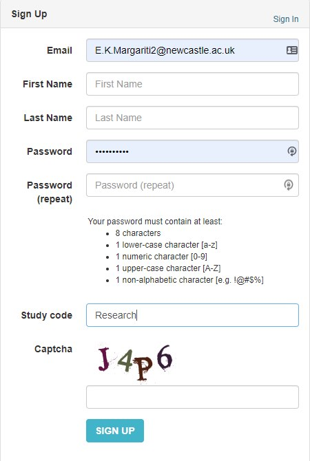 |
| 2. Once you signed up you will receive an email. Click on the activation link in the email to activate your account. You can now log in on My McRoberts. | |
| 3. Download the ‘DynaPort Manager’ (pop-up). This is needed to establish the communication between your DynaPorts and the My McRoberts portal and needs to be done for each computer you use the DynaPorts on. | 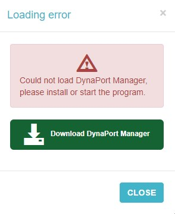 |
| 4. In the upper right corner of the website is a question mark via which you can access our manuals. Please choose‘MoveMonitor’. This manual guides you through all further steps. | 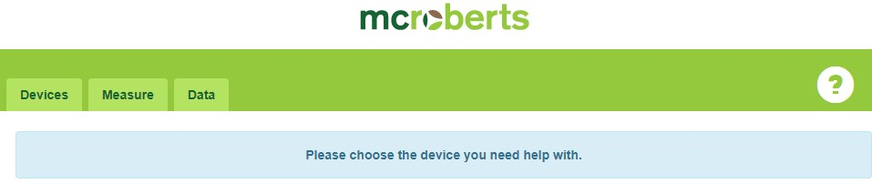 |
Charge the device
It is important to charge the DynaPort MM to ensure maximal measurement capacity. If the battery runs empty during the measurement, the measurement will prematurely stop.
|
How to charge The device can be charged by connecting it to a PC with the supplied USB cable. Multiple devices can be charged at once by using a powered USB-hub.Charging takes up to 5 hours. |
 |
|
LED status While the DynaPort MM is connected the LEDs give information about the charging status. Blinking green means that the device is currently charging and when the green LED burns constantly the device is fully charged. |
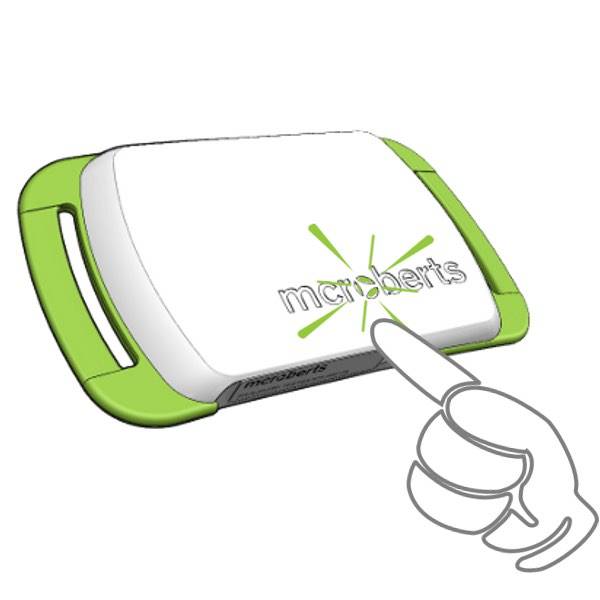 |
Configure the device for a new measurement
To set up MoveMonitor for a new measurement follow the steps below. When data of a previous measurement is found on the device, the program will ask to format the device prior to starting a new measurement. Note that formatting the device removes all data from the DynaPort MM. When the data from the previous measurement has already been uploaded to the My McRoberts web portal your data is save and removing it from the device is recommended.
| 1. Connect the MoveMonitor sensor with the provided USB cable to the computer. If you do not have DynaPort Manager installed in this computer, see how to download it at the sections above. |  |
| 2. Log in to your Mc Roberts account at:https://www.mcroberts.nl/mymcroberts/login.html . If you don’t have an account, see how to create an account at the section above. | |
| 3. Select device If you have your MoveMonitor connected, you will be able to view it in DynaPort devices tab. Right Figure: Devices Tab on the DynaPort dashboard. Each device tile displays the device number (lower left corner), the battery status (upper left corner), and that it is connected via USB (upper right corner). |
 |
| 4. Configure a device for Measurement Click “Measure” to view the configuration details for the attached MoveMonitor. |
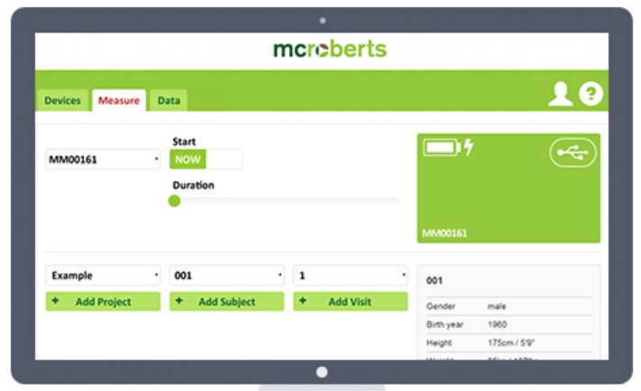 |
| 5. Select measurement characteristics Select the starting time of the measurement; this can either be now or a date in the future using the calendar feature. Thereafter, a measurement duration should be selected. The maximal measurement duration is7 full days. |
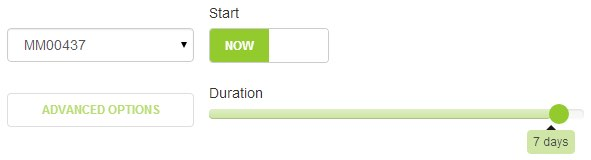 |
Add Project and subject characteristics
Add or select a project, subject and visit in order to start a measurement.
Using different projects is useful for organizing your data. Subject characteristics such as gender, year of birth, height and weight are added for each new subject.Visits refer to different measuring moments.
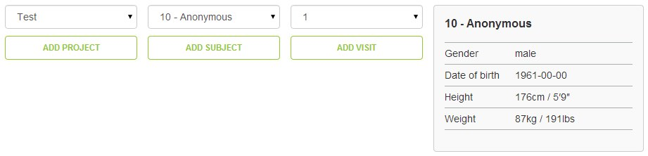
Start Measurement
The device can be started with the Start measurement-button when all the necessary information for a new measurement has been supplied. The device can be disconnected from the computer when the program notifies you to do so. After disconnecting, the LEDs will blink for about 10 seconds after which the DynaPort MM will go into standby mode. When the selected start time is reached the DynaPort MM will start measuring. During the first 5 minutes of the measurement the green LED will blink.
Device How To / setup for wear
What sort of a device / application is this, what is it for and how does it work?
The MoveMonitor is a device that is worn with an elastic strap around the waist, powered by an internal battery. It collects physical activity data of a subject for up to 7 days (24/7). Programming and data retrieval are done by a (healthcare) professional and devices can be re-used.
 |
|
|
| Figure 1:MoveMonitor Sensor. | Figure 2: MoveMonitor strap. | Figure 3: Wearing device. |
Make sure you wear the MoveMonitor correctly. The device should be worn around the waist, at the middle of the lower back. The engraved McRoberts logo should be readable, and the waist belt should be on the inside. It can be worn directly on the skin or over a thin layer of clothes. Please note that the DynaPort MM is not waterproof, so it is not suitable for showering, bathing or swimming.
| Figure 5:How to correctly wear MoveMonitor. |
What MoveMonitor is and what it does
What will I need to do before I can start using this?
Any account setup required?
No
Needs pairing with hub-device?
No
Any configuration / assembly required?
No
Troubleshooting/FAQ
The device / app seems to have stopped working: what should I do?
Battery?
The battery lasts for the entire measurement, you do not need to recharge the device during the measurement. The LED’s on the device will only give feedback during the first 5 minutes of the measurement. After that, they will be switched off.
In case the battery does run empty the LED will blink red, for example, when the device was not fully charged before the start of the measurement. Please contact the study centre below if this occurs.
Connectivity issues?
Not applicable.
Need to restart or log in again?
Not applicable.
How can I get help with using this?
If you have any other questions or concerns, please contact your local study centre:
| Newcastle, United Kingdom | Rotterdam, Netherlands | Kiel, Germany | Muenster, Germany |
| Person Name Centre Name Location |
Person Name Centre Name Location |
Person Name Centre Name Location |
Person Name Centre Name Location |
Using the device / app is uncomfortable to me: what can I do?
Adjust wear style?
It is recommended to wear the device (using the elastic belt) over a thin layer of clothing (e.g. T-shirt). Ideally, the MoveMonitor device should be worn over the same or similar piece of clothing and in the same place daily to ensure comparable data is collected.
Adjust usage pattern?
It is recommended to wear the sensor 24/7 as the project aims to investigate sleep and fatigue.
Further Troubleshooting for Professionals
- ‘Study code’ is required while sign up. What should I enter?
‘IDEA-FAST’
- Start and end time of a measurement in ‘My McRoberts’ indicates invalid date.
Please check if you selected a start time that is in the future and contact the support team to check the measurement. Make sure you provide the username and measurement ID.
- Can’t load DynaPort Manager.
If you keep getting the error “Could not load DynaPort Manager, please install or start the program” while you installed the DynaPort Manager, it means the DynaPort Manager isn’t running or the certificates of the browser aren’t set up correctly.
{kind=link}
To start the DynaPort Manager you need to paste
C:\Program Files (x86)\McRoberts\DynaPortManager
in the address bar of the File Explorer and right-mouse-click on “Run” and click on “Run as Administrator”.
{kind=link}
If you get the error “The software is already running”, you need to setup the certificates for the browsers by taking the following steps:
- Close all the active browsers.
- Close the DynaPort Manager in the Task-manager (ctrl+shift+esc). Click on the program Network (32 bit) and end this task.
- Paste
C:\Program Files (x86)\McRoberts\DynaPortManager\bin\gencert
in the address bar and run “Gencert.cmd” as administrator (right-mouse-click “Run as Administrator”). - Start the DynaPort Manager as described above and open MyMcRoberts in your browser.
- Connect a device. The DynaPort Manager is working if the device is visible.
{kind=link}
{kind=link}
If you are still getting the loading error in My McRoberts, please contact the support team.
- An error occurs while downloading data stored on the device to the PC.
In that case the path to which the measurement is transferred often doesn’t exist. The current path used for transferring data can be seen by going to C:\Program Files (x86)\McRoberts\DynaPortManager. Left klick on the file ‘Run’ and choose ‘edit’. The store path is shown and can be altered here. Make a screenshot and send it to the supportteam. You can also try to upload the measurement manually.
- How do I upload a measurement that is stored on my PC?
If you want to upload a measurement that is stored on your PC, you can go tohttps://www.mcroberts.nl/mymcroberts/manual_upload.php . Here you will be able to upload and process raw data.
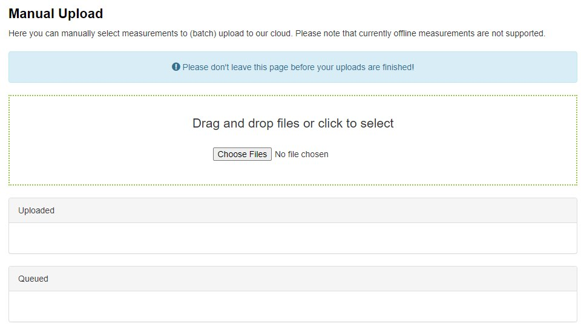
Contact McRoberts if it is stated that the measurement has already been uploaded.
- How do I change subject characteristics (weight, height, gender, date of birth) of existing subjects?
Once characteristics have been entered, they cannot be altered by the user to prevent unwanted changes from occurring. Send an email to McRoberts and McRoberts’ personnel will do it for you. Please include the username, the project, the subject and the values you want to be changed.
- Which browser is recommended for the use of My McRoberts?
McRoberts recommends using Chrome or Firefox. Make sure your browser is up to date. Regarding the use of the MoveTest we advise against Internet Explorer.
- What is the maximum measurement duration of the MoveMonitor?
The maximum measurement duration of the MoveMonitor is 7 days.
- The serial/ID number in MyMcRoberts doesn’t correspond with the serial number of the back of the device. What can I do?
Contact mcroberts including the serial number as shown in MyMcRoberts and the serial number on the back of the device.
Device return
What do I do when a period of device use is over?
You will be contacted by a member of your local study centre in order to return the device.
Before the device is returned or disposed of: does any data need to be transferred?
No action required.
Do I need to return the device somewhere?
Please contact the person that provided you with it to arrange further steps. You will have to return it by post – subject to further individual arrangement.
Returned device processing and cleaning / an application use period for a participant has ended
Do I need to clean the device after each participant returns the device?
- The MoveMonitor needs to be cleaned after it has been worn so that it can be used for a new measurement.
- The waist belt can be washed by hand or with the washing machine at a maximum of 60°C.
- The MoveMonitor can be cleaned with rubbing alcohol (70%) to disinfect the device.
- A chlorine solution is possible (50000ppm). Make sure to remove the cleaning substance afterwards.
- Never clean the device by soaking in water. The MoveMonitor is not waterproof and can be irreparably damaged when doing so.
Trigger Data Transfer Protocols?
A returned device needs to be connected to a PC with the DynaPort manager installed. You have to login on My McRoberts and data transfer from the device to the analysis server will start automatically. Detailed instructions are described in Section 3.
Where should the device be returned?
Prior to returning any device, please ensure all data has been transferred and successfully uploaded to the idea-fast hub.
Device recycling and provisioning
How will the devices and applications be supplied to the study site?
These devices will be mailed directly to the study site.
What to do with devices once the study site is entirely done with them?
??